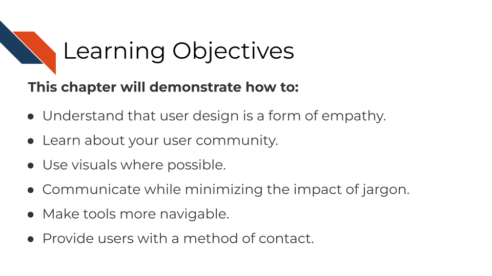
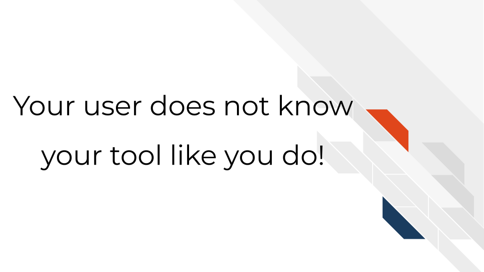
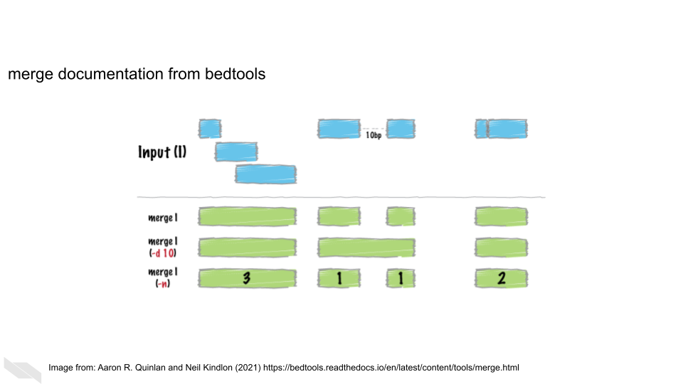

Chapter 3 Lessons we should borrow from user designers

3.1 Thinking about user-centered development
Creating tools that are easy to use starts with thinking about your user’s perspective. In other words, user-centered design is an exercise in applied empathy (Matos et al. 2013).
This is why a common saying in user-centered design is “You are not your user” (Alexakis, n.d.). Although it may be true that you may have a lot in common with your user, this saying is based in the idea that you should not assume your user knows what you know or thinks like you do. For example, a warning message that may seem perfectly clear to you as a developer, may be a foreign language to your user.

As compared to yourself, your typical user may likely have a different:
- Educational background.
- Programming experience level.
- Set of motivations for using your tool.
And most importantly your user does not know your tool like you do! You have spent many, many hours developing this tool and its unrealistic and impractical for them to spend the same number of hours with your tool that you have.

Also keep in mind users are humans in a context. Humans have demands in their life, have been working long days, and are tired/frustrated/distracted/etc. Making your tool as easy as possible to use increases the likelihood of your user continuing to stick with your tool and even becoming an advocate for your tool to their colleagues!
3.1.1 Generalities about bioinformatics tool users
On a general level, there are some characteristics we know about bioinformatic tool user communities.
The typical user of bioinformatics tools are generally:
- Highly educated in their specific research topic.
- Skilled at picking up new information.
- Unlikely to have extensive experience in programming; may be uncomfortable with using command line.
- If they do have experience programming, it’s likely been from informal and self-taught learning.
- Like many professionals, likely to feel time pressure from deadlines.
However, the bioinformatics user community also includes a variety of individuals with different roles and experiences. Mulder et al. (2018) described 10 user personas for bioinformatics software, all with their own skills and competencies:
- Physician
- Lab technician
- Ethicist
- Biocurator
- Discovery biologist/academic life science researcher
- Molecular life science educator
- Academic bioinformatics researcher
- Core facility scientist
- Bioinformatician in an academic or research infrastructure support role
- Bioinformatics software developer/software engineer
Additionally, users may be at various stages in their education (undergraduates, graduates, postdocs, etc) and may have varying experience and time constraints.
3.2 Exercise: Think about the user community for your tool
Write down what you know (or think you know) and try to identify any knowledge gaps you might have about your user community.
- Who is your user community?
- What need of theirs is addressed by your tool?
- What kinds of skills does your tool assume your user has (does your user community have those skills)?
Keep the questions about your user community in mind and in a later chapter, we’ll go into more detail about conducting user research to address any knowledge gaps you may have about your user community.
3.3 General principles about user-friendliness
While finding out about your user community is critical, there’s also principles we can discuss that are common to all users/humans.
3.3.0.1 Humans like visuals
Humans are drawn to intuitive visuals. Visuals are efficient means of communication and help users absorb information better than long-winded paragraphs (though visuals need an accompanying explanation too).
Sometimes this is particularly helpful for complicated concepts. For example, BEDtools (Quinlan and Hall (2010)) allows for the manipulation of genomic sequences in BED files. Some of these principles can be complicated to visualize, but the authors of BEDtools do a great job of using visuals to explain each function:

Here, this figure explains how the merge function works given a particular set of ranges.
3.3.0.2 Stay away from jargon
What someone considers jargon is a very relative to their own experiences. Terms that may seem like common knowledge to you may be foreign to your user.
For example, something seemingly commonplace to you like TSV may be something a user does not understands what it means. To help smooth over jargon-related barriers, spell out abbreviations the first time you mention them (e.g. ‘tab separated values (TSV)’). This doesn’t mean you have to have long winded explanations of every term, instead you can quickly link out to an article or website with information about a term you’ve used (e.g. tab separated values file (TSV)). This has the benefit of saving you and your user’s time without making your explanations too long winded.
3.3.0.4 Provide a method for users to file concerns
No matter how much you have perfected your tool, it will never be perfect, especially since software deprecates over time. Because of this or other unknown unknowns, a usable tool still has a way for a user to let the developers know when something isn’t working. This might be a direct and obvious break like a bug or broken link, but it could also be something more subtle that also requires your attention. We’ll discuss this in more detail in a later chapter.
Now that we’ve discussed some major principles about users and design, let’s dive in to talking about how documentation can help!
References
For all cartoons:
Avataars by https://getavataaars.com/.
Icons by https://thenounproject.com/ License CC BY-NC-ND 2.0.
Emojis by OpenMoji License: CC BY-SA 4.0.↩︎